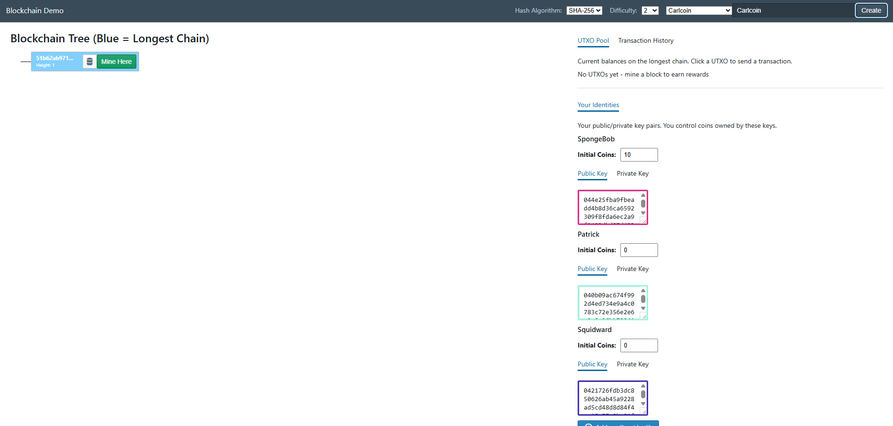
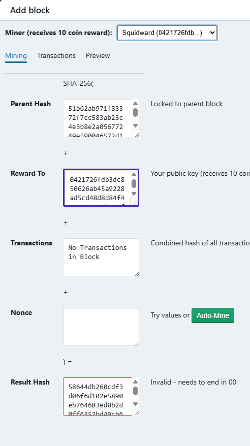
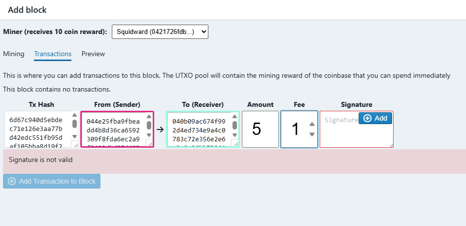
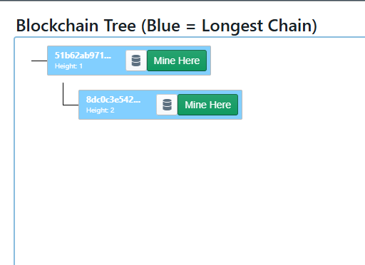
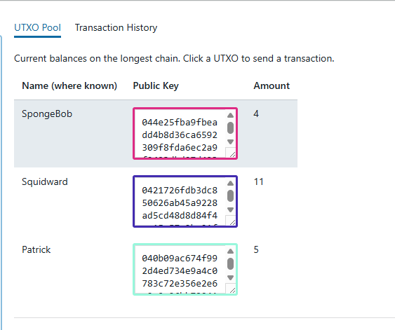

This project explores blockchain construction and system behavior through an interactive demo where users can create nodes, submit transactions, mine blocks, and inspect the UTXO pool.
A blockchain is a distributed, ledger made up of a chain of cryptographically linked blocks. Each block contains a set of transactions, the cryptographic hash of the previous block, a nonce, and the public key of the miner who produced it. To add a new block, a miner must perform proof-of-work: repeatedly hashing the block's contents with different nonces until the resulting hash starts or ends with enough zeros to satisfy the current difficulty target. Because every block references its parent's hash, tampering with any block invalidates every block that follows it, making the chain tamper-evident by design. Ownership of funds is tracked through a UTXO (Unspent Transaction Output) pool — every spend consumes prior outputs and produces new ones, so the ledger always reflects a consistent set of spendable balances without any central authority, making the blockchain decentralized.
Demo repository: https://github.com/jungp12p/blockchainDemo
Forked from: https://github.com/nambrot/blockchain-in-js
Added Features:

Implementation: The main screen serves as the control center for the full blockchain simulation. Users can create nodes, set transaction amounts, change mining difficulty, choose hashing algorithms, and inspect balances through the UTXO pool. This layout makes it easy to see how parameter changes affect mining effort, block validity, and account state across the network.

Implementation: Each block includes the parent hash, miner public key, transaction hash bundle, nonce, and final result hash. During proof-of-work, the nonce changes repeatedly until the resulting hash satisfies the selected difficulty target. Exposing these fields in the UI helps demonstrate exactly what data is secured by hashing and how chain integrity is preserved.

Implementation: Transaction creation allows users to specify sender, receiver, and transfer amount. Transactions are then signed with the sender's private key so the network can verify authenticity. This enforces ownership of funds and prevents unauthorized spends before transactions are accepted into a mined block.


Implementation: Once a valid block is mined, it is appended to the chain and the UTXO pool is recalculated. The miner receives a reward, and all node balances update according to confirmed transactions. This gives a clear visual model of how consensus, incentives, and spendable outputs interact in a UTXO-based blockchain.
Metaphysics is the philosophical study of the fundamental nature of reality. It asks questions such as: What is true? What is identity? What does it mean for something to exist? Blockchain and cryptocurrency are especially interesting in metaphysics because they challenge our everyday assumptions about ownership, material objects, and social reality.
Owning cryptocurrency does not mean owning a physical object. There is no coin to hold and no central bank to withdraw from. In practice, a person is considered to own a coin because the blockchain network recognizes ledger records that assign spendable outputs to that person. Ownership is therefore established through cryptographic proof, network consensus, and shared acceptance of protocol rules.
Our second branch of philosophy was Ontology, a branch of metaphysics focused specifically on existence. Ontology asks: What makes something a thing rather than nothing? What conditions must be met for something to exist?
Normally, we think of existence in terms of physical objects. Bitcoin complicates that idea because its state is not physical. Instead, Bitcoin exists as entries in a distributed digital ledger secured by cryptographic proofs. Its existence is both mathematical and social: participants follow the same protocol rules and collectively treat ledger entries as valid ownership and transferable value.
If all computers running Bitcoin were turned off, but the protocol and records still existed, would Bitcoin still exist?
Our class clarified that this scenario means all nodes and users are unable to access the network, with no new transactions and no new blocks. Adit argued that Bitcoin would effectively not exist in any meaningful way, especially over time, because it could not be used and cryptographic verification is practically impossible without computers. Joe pushed back and argued that verification could still be done by hand in principle, just at an extremely slow rate. Under that view, Bitcoin could still exist as a possibility, even if it became non-functional for modern economic use.
A major theme in this debate was that trust in Bitcoin depends on fast, reliable computation. Modern computers are what make cryptographic validation, consensus, and transaction finality practical. So while one can argue that Bitcoin may exist conceptually without active machines, a functioning blockchain economy is realistically inseparable from computational infrastructure.
If no one recognized Bitcoin as valuable, would Bitcoin still exist, or would it become meaningless data?
Henry compared Bitcoin to gold. If gold became socially useless or lost market value, it would still exist as a material thing in the world. By analogy, many classmates argued that Bitcoin would still exist as structured ledger data and protocol-defined state even if people stopped valuing it economically. The class consensus was that value and existence are related but not identical: value can collapse while existence remains.
My takeaway is that blockchain reveals a layered model of existence. Bitcoin exists technically as cryptographic records, institutionally as a protocol-governed network, and socially as a collectively recognized store and transfer of value. Metaphysics and ontology help explain why something can be real and structured even when it is not physical, and why social recognition can transform ledger entries into economically meaningful ownership.